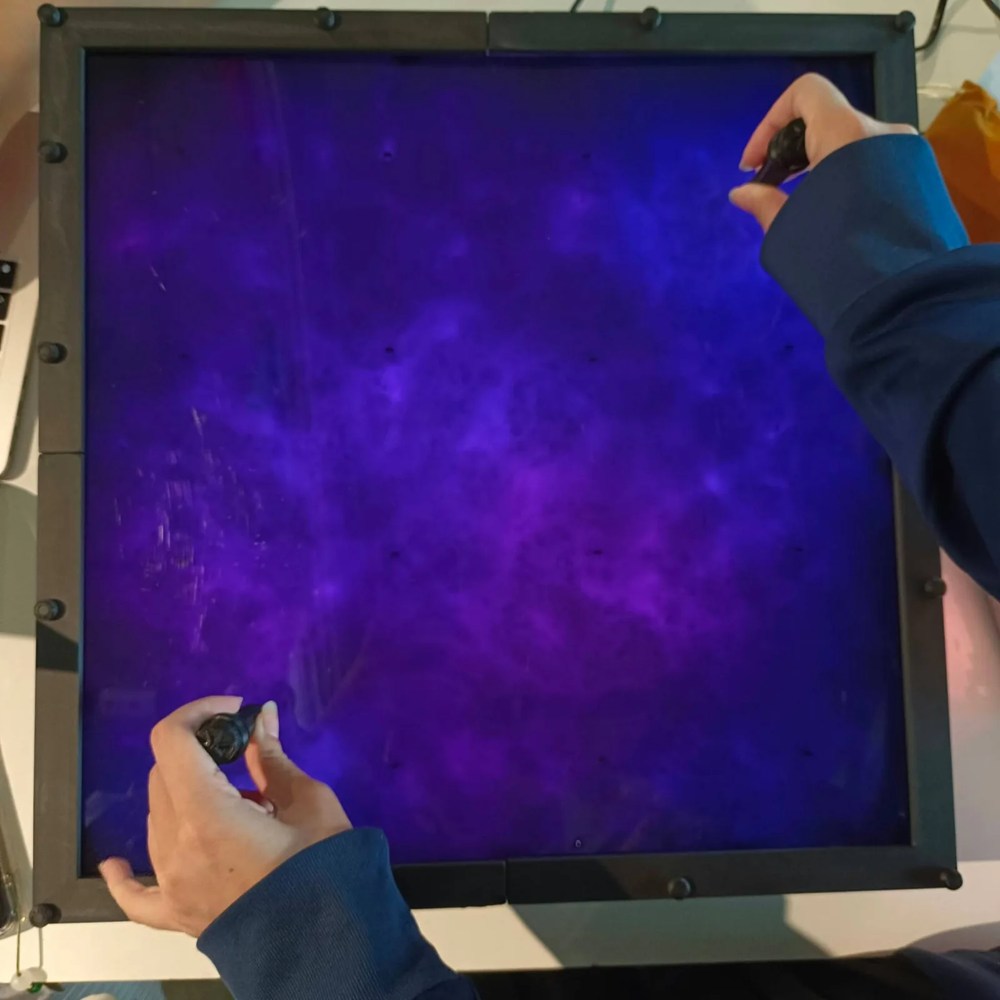
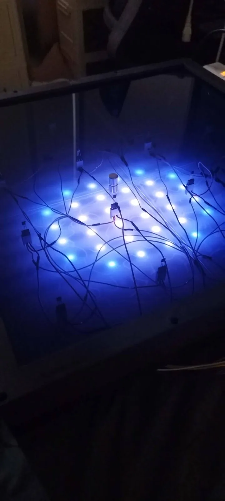
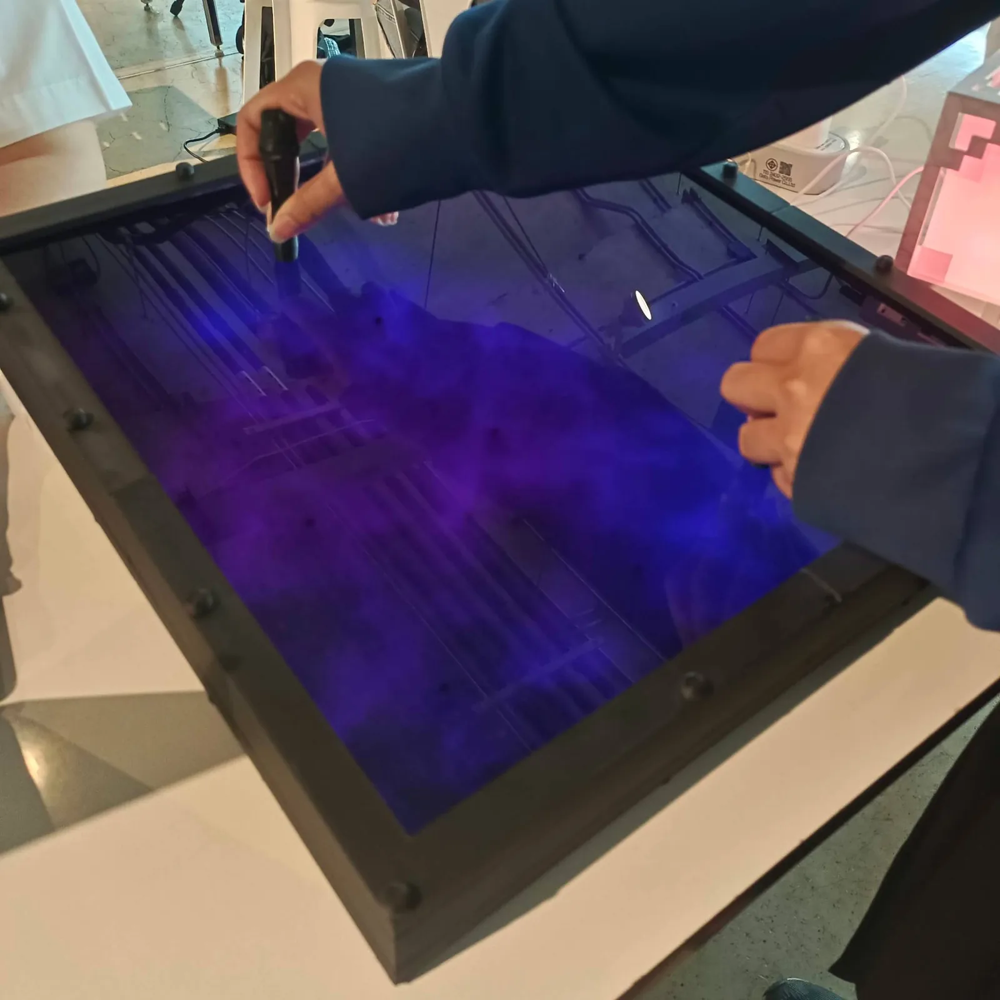
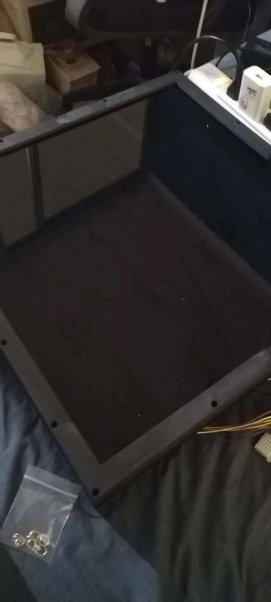
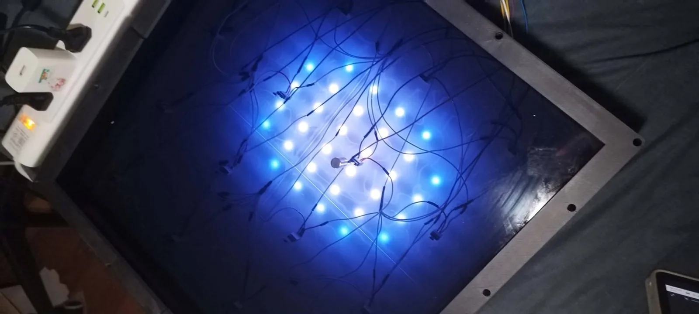
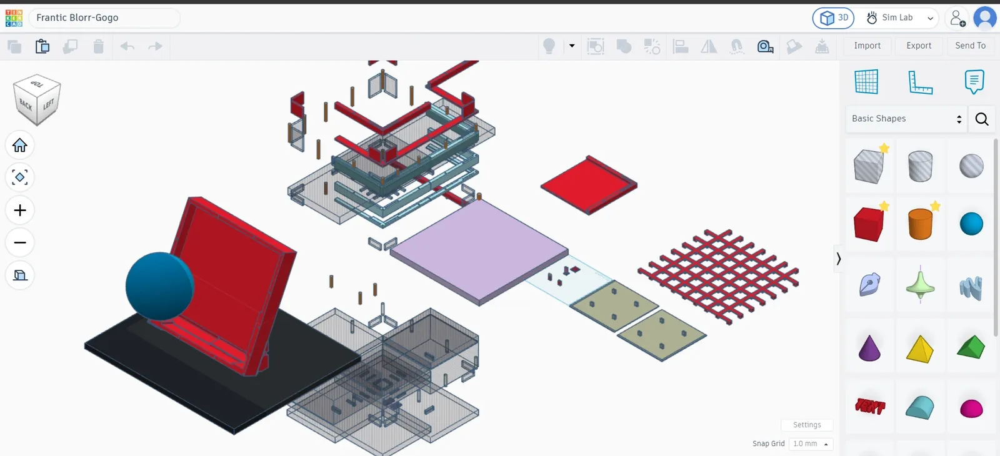
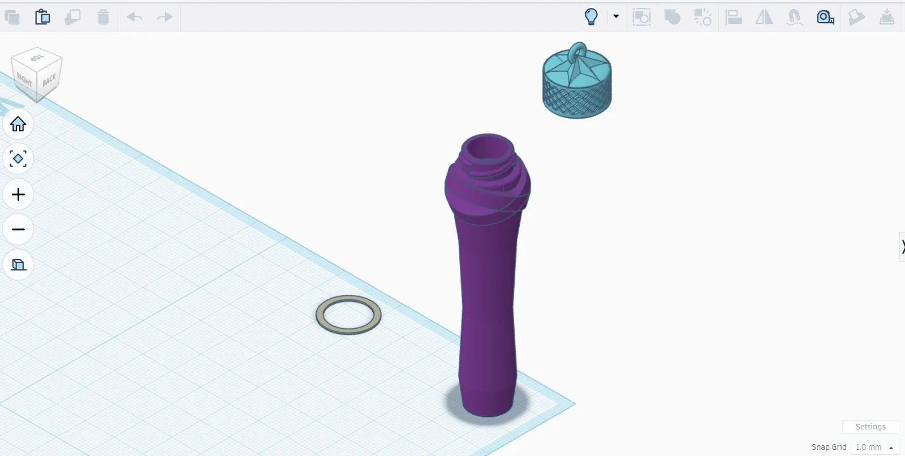

Magnetic Universe
Place a magnet pen on the panel and light gathers beneath it. Bring two magnets close and their pools of light merge, like a small universe. Magnetic Universe is a 40 × 40 cm LED wall panel for a light exhibition, using up to two magnets.
In short: A finished course project. I led the team, came up with the sensing idea, and modelled, printed, wired and soldered it. AI wrote the code to my spec.
- When
- Jan – May 2026
- Team / role
- Team lead, team of 4
- Tools
- 16 Hall sensors (magnetic-field sensors) · addressable LED strip · Tinkercad · 3D printing
- Status
- done

Problem
The first plan put 25 Hall sensors on each of three panels, which meant 75 sensors to solder, and fewer sensors would only detect in patches. The light also had to read as a soft glow rather than LED dots, on a frame that was already heavy and had to stand tilted.
What I decided
- Less hardware, more math. Instead of soldering 75 sensors, I used 16 Hall sensors (4 × 4) on a 400 × 400 mm panel. The system finds the strongest sensor and computes the magnet’s position from it and its neighbours, weighted by field strength, so the magnet doesn’t need to sit on a sensor. This solved both the coordinate mapping and the soldering load.
- Calculate from neighbouring sensors only. I argued against averaging all 16 sensors and had the position computed from the neighbouring group only.
- One ring per magnet. Each magnet (up to two) gets one ring of light that “floats” between sensors with the field strength. Bring two magnets close and their rings blend into one image.
- Fibre fill, not a thicker frame. The suggested fix was a white printed box, black acrylic and spacing, and it still showed the LEDs as dots. I packed heat-resistant fibre fill that diffuses the light into the sensor layer. It causes no short circuits at the solder joints, no interference with the Hall sensors and no added weight, and the light spreads evenly.
- Keep the 6 cm frame. I considered 8 cm, but the panel was already 3–4 kg and mounts at 60°. I aim for something practical: compact to display, with sensible weight and size, rather than a bigger frame that fits everything without thinking about space.
- Print my own fasteners. Threaded rods with twist-on caps (the round knobs on the frame are printed nuts), and a frame that assembles in layers. I caught threads that were too thin for the slicer to print.
Result
The final build is one 40 × 40 cm panel with 16 sensors, and it runs as shown below: light gathers under each magnet pen on the face, and two pools of light blend into one. Before committing to the full grid, I tested with four sensors that detection still reached through the diffuser layer.
Gallery







My role and collaboration
I came up with the concept, designed the device and its sensing logic, modelled and printed it on my own 3D printer, and did the assembly and soldering. My teammates handled the documents and presentation. AI wrote the position-calculation code to my spec.